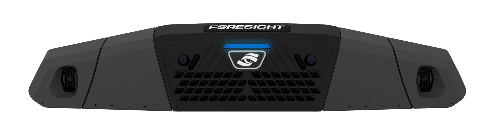

Room to swing.
Mounted above the hitting area, Falcon keeps the launch monitor off the floor.
The feedback to work on your game. The courses to get lost in it. Explore the technology behind your next round at AVID.

Our planned upgrade will bring clubhead data to all six bays. More insight, wherever you book.

Mounted above the hitting area, Falcon keeps the launch monitor off the floor.
High-speed cameras capture ball and club information around the moment of contact.
AVID’s planned rollout will make clubhead feedback available throughout the facility.
Clubhead measurement requires club markers and the appropriate hitting zone. Our team can help with setup. View sticker pricing. Official Falcon specifications.
Select a measurement to explore what it tells you. The screen below shows example data, not a live shot.
 EXAMPLE DATA / NOT A LIVE SESSION
EXAMPLE DATA / NOT A LIVE SESSIONClub path describes the direction the clubhead travels at impact relative to the target line.
Compare your path from swing to swing. Review it alongside face angle to build a clearer picture of your shot pattern.
Clubhead data is currently available in selected bays. Request it in your booking notes; coaching and bay allocation may take priority. The Falcon upgrade will extend it to every bay.
We want every visit to offer something useful, whether you’re practising, working with a coach or comparing clubs.
Look for patterns across your shots and use feedback to guide what you work on next.
A coach can help turn your session’s feedback into an understandable practice plan.
Explore coachingReview how different club setups perform with your swing during a fitting.
Explore club fittingsExplore GSPro’s growing library of community-created courses. Find a new favourite, revisit a familiar layout, or let your foursome choose the next challenge.

Browse Simulator Golf Tour’s searchable course directory.
Opens Simulator Golf Tour. Availability at AVID depends on installation and updates; ask us about a specific course before your visit. Course simulations are community-created and are not affiliated with the real-world courses. Gameplay image: GSPro.